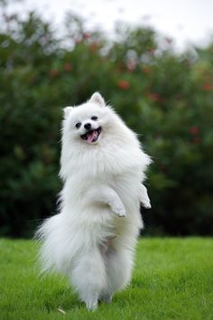
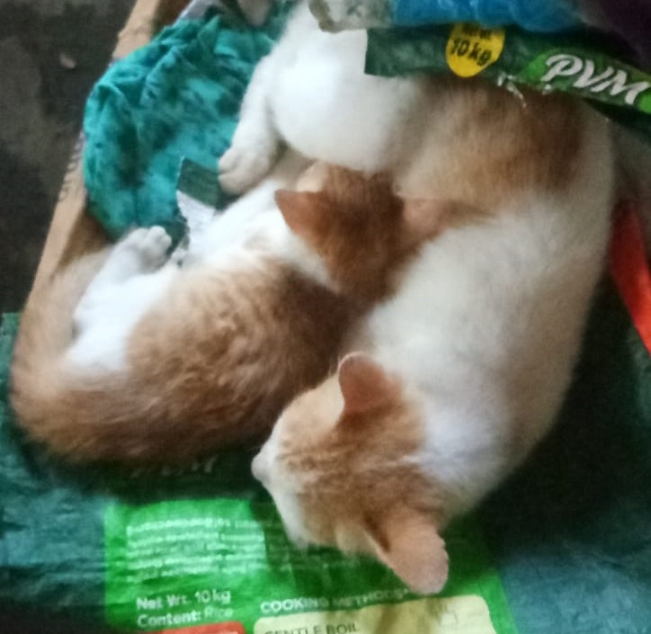
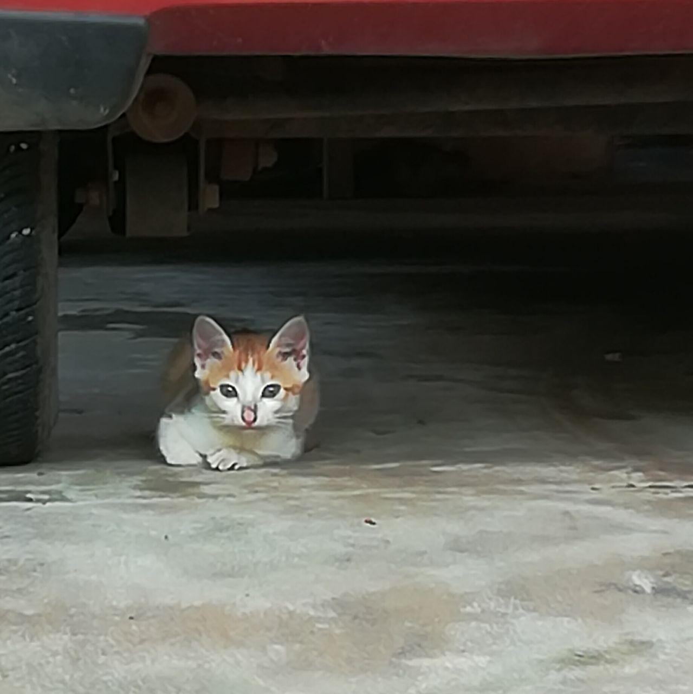
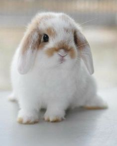
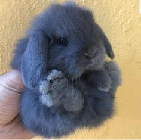
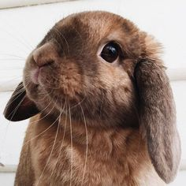

Pets are great! I've once had a pet pomeranian dog, but always ran away from her ever since she barked and scared the sh!t out of me when I was young. (Given below is a reference to how my pet looked)
I've played with a bunch of stray cats.
 Even had a pair of Agapornis, commonly known as Lovebirds. One escaped (good for him) while the other one died of oldage.
But the one pet I'd absolutly love to have is a bunny.
  Thanks for stopping by. Hope you have a wonderful day!